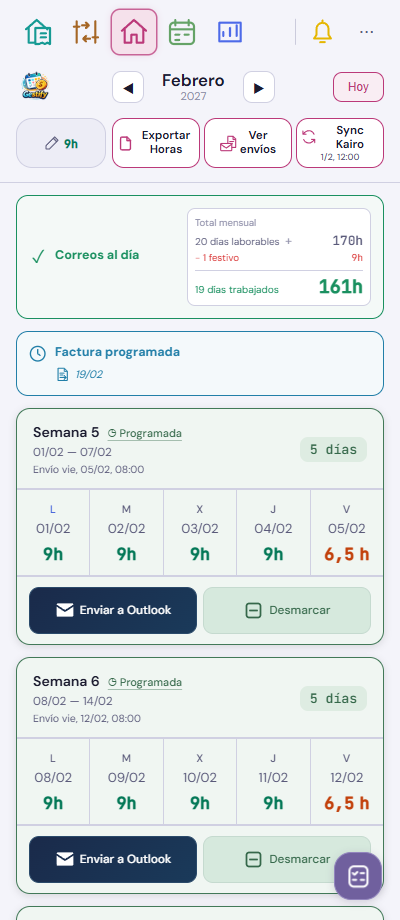
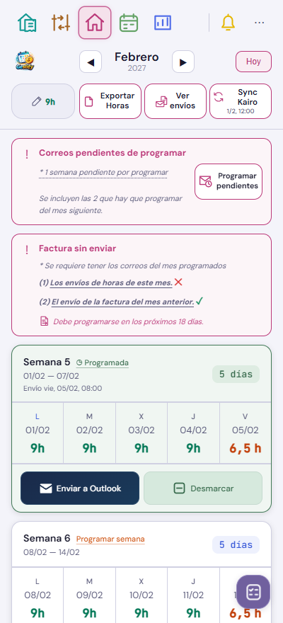
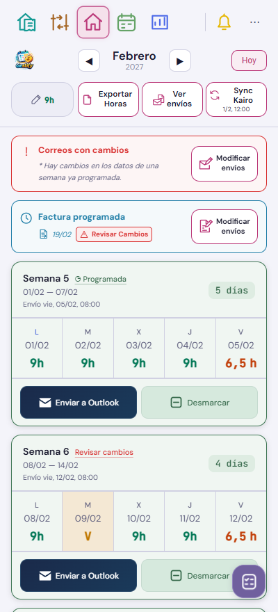
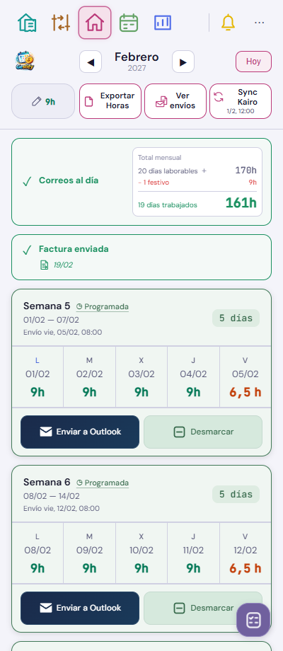

Home R8 aplicada · v543
Capturas de la pantalla real de Gestify con datos ficticios. Se conserva el formato semanal, el envío manual a Outlook y la edición de días. Los avisos y los botones usan los estados guardados por la app.








«Modificar envíos» de correos abre la revisión de semanas de Kairo. La actualización de un correo existente necesita confirmación y conserva el control de duplicados. El botón de factura abre el cálculo del mismo mes y «Enviar cambios a Kairo»; allí se confirma «Actualizar borrador». Se conserva la identidad de la factura y después se solicita una nueva aprobación.
Validación del 6/11/2026: consultas HTTPS de los registros de horas y facturas correctas; Outlook devuelve «ready» tras reiniciar su navegador bloqueado. La instalación conserva intactos planes, borradores y diario de correos. No se han programado, emitido ni enviado correos reales en esta entrega. La comprobación desde Vivo Sesiones queda pendiente porque el teléfono no está disponible.